10 步让 AI 替你干活
Grok Bot Agents 完整教程解读 · 491 万浏览长文
Codez 把"AI 工具 = 等你问"的旧范式彻底翻过去，用 10 步告诉你 Grok Bot 怎么从一台云端电脑起步，搭出一支 Specialist 协作小组，每周五分钟复盘一次。本文逐节拆解 + 5 个最值得复制的中英对照示例块 + 15 张原文图按位置完整保留。
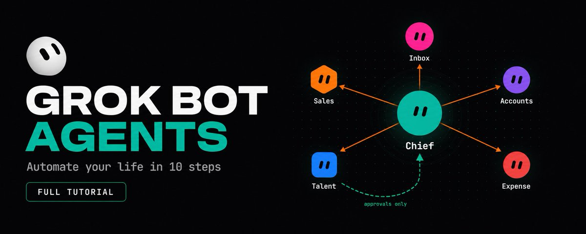
原文封面 · Grok Bot Agents: how to automate your life in 10 Steps · Codez (@0xCodez) · 2026/08/18
到目前为止，你用过的每一个 AI 工具都在等你——你打开它、发问、它回答、你关掉它。工作始终发生在你的手里，模型只是把过程口述给你听。
Grok Bot 反过来。每个 bot 在云端都有一台自己的电脑，它登录你已经在用的工具，像你那样点来点去，关上笔记本之后它还能继续干。这意味着你不再「prompt」，而是「delegate」；不再搭 workflow，而是用一句话描述一个工作。
这就是 Codez 那篇 491 万浏览 X 长文要教的事：从下载安装开始，到带出一支 Specialist 协作小组，互相派活，只在需要你判断时拉你进来——一共 10 步。
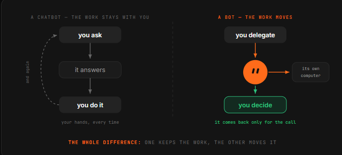
原文配图 · 范式转变示意 · Codez (@0xCodez) · 2026/08/18
prompt 是一句请求，
workflow 是一串步骤，
bot 是一个持久化的角色。
— Codez · Grok Bot Agents · 2026/08/18
Install it, then meet the Chief
Grok Bot 是一个桌面应用，不是浏览器标签页——光是这一点就告诉你它到底是什么。
你从 macOS 安装、用 Grok 或 Cursor 账号登录之后，落地的不像一个聊天机器人，更像一个 IM 客户端：左边一栏是已命名的 bot，右边是对话。
你的起点通常是一个通用 bot——叫它 Chief。它的活不是包揽一切。它的活是当你还不知道哪个 specialist 该负责某件事时，你能找它问；之后，是它去协调其他 bot。把它当成你不确定该找谁时发消息的那个人。
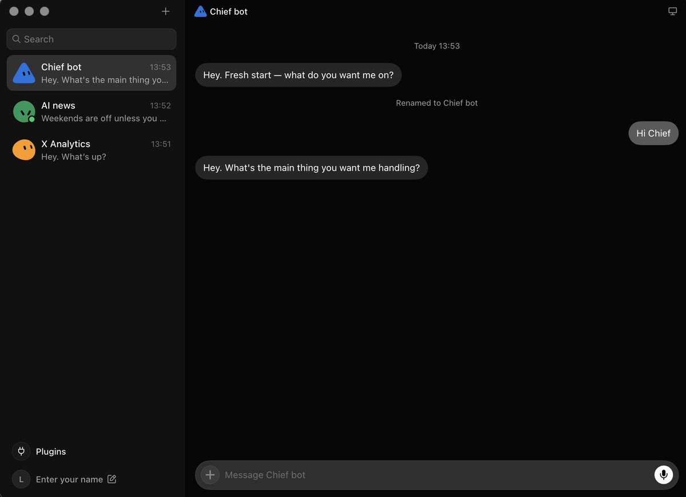
原文配图 · Chief 主界面 · Codez (@0xCodez) · 2026/08/18
先打个招呼，给它一件又小又真实的事。不是测试题——是一桩能验证结果的小差事。
第一件事应该是你 30 秒内就能验证结果的那种。因为接下来 9 步的全部意义，就是学着把越来越大的活交给它。
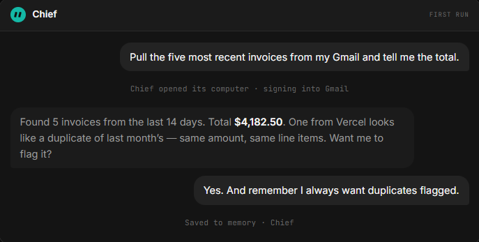
原文配图 · 第一件任务 · Codez (@0xCodez) · 2026/08/18
Give it a job title, not a prompt
这一步把"用 Grok Bot 真正拿到价值的人"和"撞了一下就放弃的人"彻底分开。prompt 是一句请求。
bot 是一个角色——它持久化、积累记忆、拥有一个 domain，正因你反复回到同一条 thread，它在这个 domain 上会越来越强。
所以按"一个真实人能 hold 的职位"来命名它。
然后像 Day 1 给新员工做入职简介那样写它的 charter：它负责什么、什么是"做得好"、以及——人人都跳过的部分——什么情况下必须先问你再做。
这最后一条边界不是官僚流程。它就是你敢把 bot 留在那里无人值守的根据——因为你已经提前定义好了它的权限在哪里止步。
凡事都得问的 bot 等于没用；从来不问的 bot 等于危险。charter 是一次性把这条线画好的地方，省得每次都纠结。
Bot name examples (pick one per bot, like a real job): - Inbox Manager - Expense Manager - Talent Scout - Sales Outbound Charter template (write once, in plain sentences): 1. Owns: <the domain this bot is responsible for> 2. Looks like success: <what a good output is, in 1 sentence> 3. Must never do without asking: <the irreversible actions, named explicitly>
bot 命名示例（按真实职位来选，一个 bot 一个）： - Inbox Manager（收件箱管理） - Expense Manager（报销管理） - Talent Scout（人才挖掘） - Sales Outbound（销售外联） charter 模板（写一次，说人话即可）： 1. 负责：<这个 bot 管的 domain> 2. 什么叫做好：<一句话讲清楚「交付合格」长什么样> 3. 哪些事必须先问我：<把所有不可逆动作列出来，明文写>
Connect the tools once
Grok Bot 自带一个插件面板，列出它希望你重点接的几个：
Notion、Slack、Google Drive、AWS Agents、AWS SageMaker、Browserbase、Composio、Context7，外加一个"自定义插件"选项。这些都是一键接入。
值得注意的细节是：账号下的连接是共享的。给一个 bot 接好 Gmail 或 GitHub，之后建的每一个 bot 都能复用同一个连接。
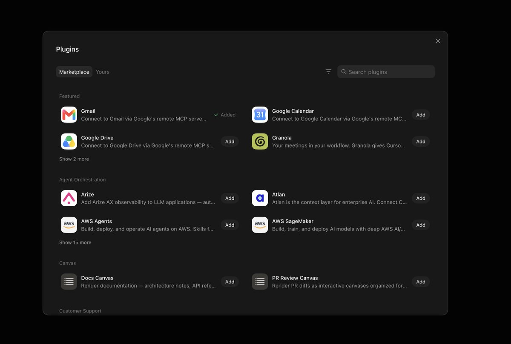
原文配图 · 插件面板 · Codez (@0xCodez) · 2026/08/18
所以这件事要趁早、刻意去做——这是账号层面的管道，不是每个 bot 各接一遍。也就是说第五个你招来的 bot，是几秒钟就能 productive，而不是几分钟。
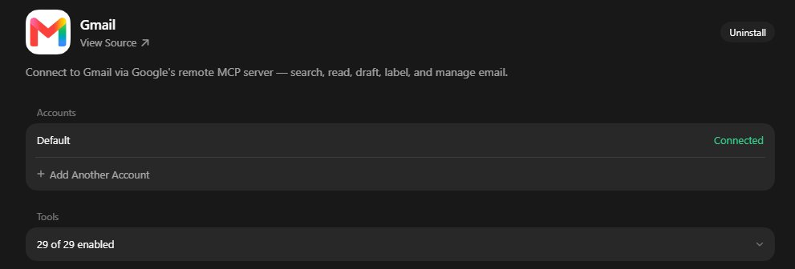
原文配图 · 共享连接 · Codez (@0xCodez) · 2026/08/18
反过来也成立：一条连接的"爆炸半径"是你今后会建的每一个 bot，所以 beta 期间，建议只接入你真正需要的那几个账号，其余先放着。
Hand off the login, don't paste the password
这才是让整个产品在"没有 API、没有 MCP server"的工具上跑得起来的关键机制——而真实公司里大多数内部工具就是这种。
bot 在它自己的云端浏览器里一直导航，直到撞到登录墙，然后把屏幕交给你。
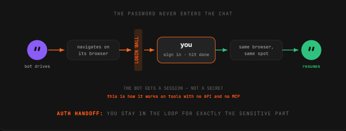
原文配图 · 撞到登录墙 · Codez (@0xCodez) · 2026/08/18
你认证、点完成，bot 就在同一台浏览器实例上从刚才停下的地方继续。
同样的移交模式，不管你接的是 Notion、Gmail，还是某内部谁都没集成的工具。
看看这对信任模型做了什么：你从不在聊天消息里输入凭据。bot 拿到的是一个 session，不是一个 secret——而整个敏感环节你都亲眼在 loop 里。
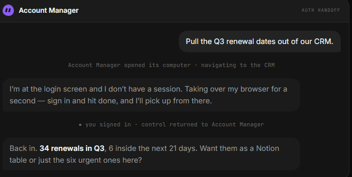
原文配图 · session 而非 secret · Codez (@0xCodez) · 2026/08/18
如果哪个工具要你把密码贴进对话里，那就是错的路径。
Show it once, don't explain it twice
这是会改变你看这个产品方式的一个功能。
亲自做一遍、让 bot 在旁边看着，就能把 workflow 教给它。它把 routine 存下来，下次就能自己跑同样的步骤。
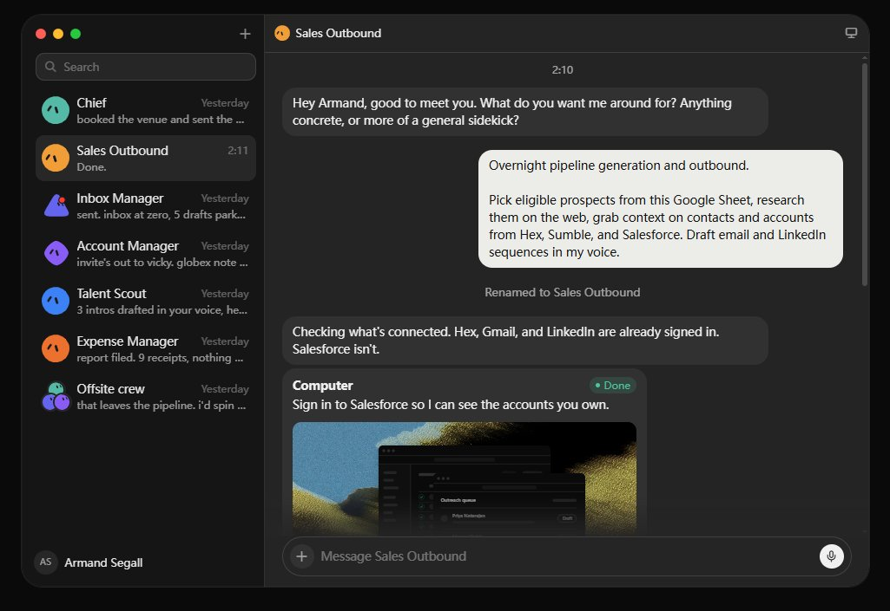
原文配图 · 录制 routine · Codez (@0xCodez) · 2026/08/18
为什么这件事比听起来更重要：真正吃掉你一周时间的，通常是"描述起来很啰嗦、演示起来一眼就会"那种任务。
重复、跨工具、稳定。三件事都符合的任务，就是等着被你从桌上搬走的那种。
另外据报道，bot 在被你用得越多之后会越来越利——它们记住对话、学会你喜欢的处理方式。SpaceXAI 自己说，bot 最终会在你开口之前就开始干活——这话先当成方向，beta 期间别把它当承诺来排期。
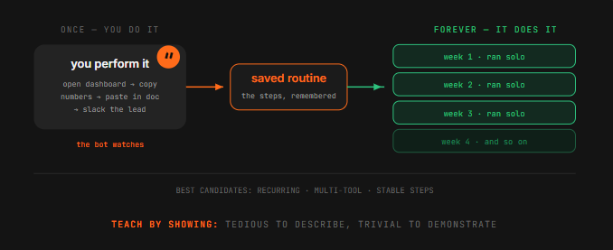
原文配图 · bot 越来越利 · Codez (@0xCodez) · 2026/08/18
Turn it into a routine that runs without you
存下来的 routine 还差一个触发理由。Grok Bot 给你两种，都是对话式配置——不画 workflow，不拉节点画布。上手实测里，搭一个 trigger-based routine 大概两分钟、一句 prompt。
Schedule 是显然的：早上 7 点的日报、周五的 pipeline 总结、月底的报销归档。
Trigger 才是更有意思的那种：一条新的 Slack 消息、一封匹配模式的入站邮件、文档里的一次变更。trigger 才是让 bot 显得"在场"而不只是"准时"的东西。
你不是去搭自动化，而是刚才发生的那次你认可，再要一次。整个产品的设计哲学就在这一个手势里。
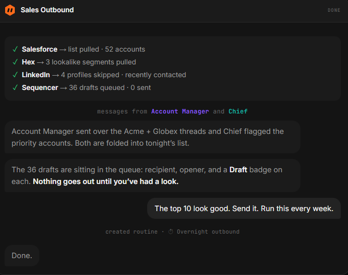
原文配图 · Schedule vs Trigger · Codez (@0xCodez) · 2026/08/18
SCHEDULE — run at a fixed time - 7:00 daily: pull yesterday's sales numbers, post summary to #sales-daily - Friday 17:00: pipeline review for the week - Month-end: file all receipts into Q4/expenses TRIGGER — run on an event - new Slack message in #customer-support containing "refund" → draft reply - inbound email matching "invoice overdue" → open a task in Notion - any change in /shared/roadmap → ping the spec bot Pattern: just add one sentence at the end of a task you already like. "And do this every Monday at 9am." / "Run this whenever X happens."
SCHEDULE —— 固定时间跑 - 每天 7:00：拉昨天的销售数据，发摘要到 #sales-daily - 每周五 17:00：本周 pipeline 复盘 - 月底：把所有报销归档到 Q4/expenses TRIGGER —— 事件触发 - #customer-support 里有含「refund」的 Slack 新消息 → 起一份回复草稿 - 收到主题匹配「invoice overdue」的邮件 → 在 Notion 开一个任务 - /shared/roadmap 里任何变更 → 通知 spec bot 套路：在你已经满意的一次任务末尾，加一句话。 「每周一 9 点再跑一次。」「X 发生时就触发。」
Hire specialists, not one generalist
你可以让多个 bot 并行跑，每个管一块——而到这一步，产品才开始不像你以前用过的任何东西。
独立的 bot = 独立的 memory、独立的 context、独立的问责。
- 一个 Expense Manager 只想着报销的事——它对你的报销会真的越来越懂。
- 一个通才同时管报销、招聘、外联，三件事都做得更糟，出问题的时候也找不到一条干净的线索回头查。
SpaceXAI 自己说，他们内部跑的 bot 覆盖销售外联、市场、办公运营、bug 修复。一个人的起步名单像下面这样——注意按 domain 拆，不是按任务大小拆。
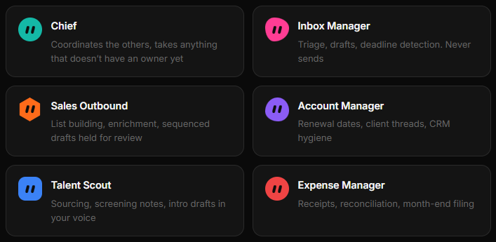
原文配图 · Specialist 名单 · Codez (@0xCodez) · 2026/08/18
Put them in a group chat
bot 之间可以互相发消息、在 thread 里共享 context。把几个扔进一个群聊，它们会自己协调——传活、分配归属、只在需要判断的时候拉你。
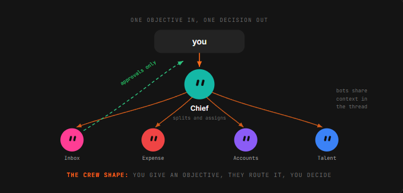
原文配图 · Bot 群聊 · Codez (@0xCodez) · 2026/08/18
项目有重叠时，它们会就同一个账号保持一致，不用你把笔记在对话之间复制粘贴。
SpaceXAI 给的例子是：工程 bot 复现一个 bug → 开一张 ticket → 交给第二个 bot 来 debug。
那个"交接"——一个 bot 判断另一个 bot 更合适，并把 ownership 交出去——是你以前用过的所有工具里都不存在的东西。
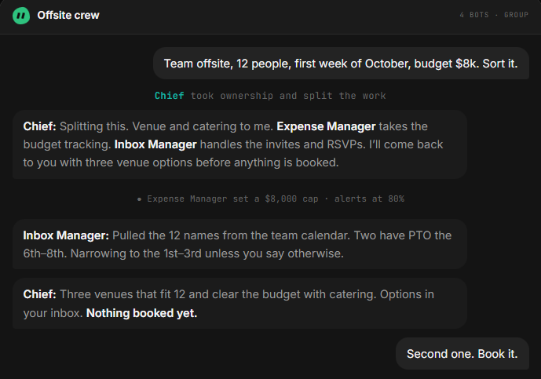
原文配图 · Bot 之间交接 · Codez (@0xCodez) · 2026/08/18
后者才是"超过一个 bot"的全部意义。
Draw the approval line
Grok Bot 的整套假设就是：bot 把活从头到尾做完，只在需要你审批的时候回来找你。
这把"什么是需要审批"的判断标准压在了你身上——因为 bot 自己挑的默认答案，未必就是你的。
真正能用的那条线不按任务大小分，而按可逆性分。
把这个规则套回 Sales Outbound 的例子：36 封草稿排队、0 封发出。bot 把所有可逆的事做完了，正好在不可逆的那一步停下。每个 bot 跑起来，都应该奔着这个形状去。
Do end-to-end, no human in the loop (bot can undo): - drafting (email, doc, message) - filing (sort, archive, label) - tagging (categorize, route) - summarizing (meeting notes, weekly report) - researching (read sources, gather facts) - preparing (deck, agenda, checklist) Stop and ask me first (the outside world sees it, money moves, or it can't be taken back): - sending outbound email to a real person - posting public-facing copy - any payment / refund / wire - deleting records - changing a contract or commitment - anything where a wrong move is irreversible
可以独自做完、不用你过目（bot 自己能撤销）： - 起草（邮件、文档、消息） - 归档（分类、入库、加 label） - 打标签（归类、路由） - 做总结（会议纪要、周报） - 做调研（读资料、汇拢事实） - 做准备（deck、议程、清单） 必须先问你再做（外部世界会看见 / 动钱 / 撤不回）： - 给真实联系人发外联邮件 - 发对外公开文案 - 任何付款 / 退款 / 走账 - 删除记录 - 改合同或承诺 - 任何「做错了就撤不回」的事
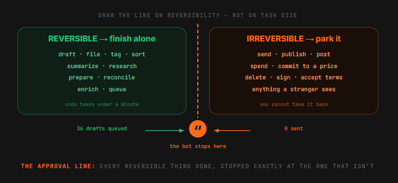
原文配图 · Sales Outbound 例子 · Codez (@0xCodez) · 2026/08/18
Review weekly, prune ruthlessly
自动化会悄悄腐烂。一个站点改了布局、一个 routine 静悄悄开始产出垃圾，而 bot 是你睡觉时还在跑的——三周都没人发现。
这是所有永远在线系统的失败模式，它也会在这里找你。
所以在日历上钉十五分钟。每条 routine 问三句话：
第三句比看起来重要——这种工具的自然漂移，就是堆出一摞"半有用、谁也舍不得删"的自动化。
做复盘最好的办法是让 bot 自己汇报。它们保管着 thread，能自我 review；然后你每个 routine 抽一份结果亲手抽查——因为 bot review 自己的工作，跟你有同样的盲区。
For each routine, three questions (15 min total on Friday):
1. Did it run?
- if not: why not? fix the trigger, or delete the routine.
2. Was the output actually right?
- spot-check one output by hand. if it's been wrong twice, kill it.
3. Would I miss it if I killed it?
- if you have to think about this, you wouldn't miss it. delete it.
Ask the bots for the report — they keep the threads, they can review themselves.
Then spot-check one output per routine by hand.
每条 routine 三个问题（每周五共 15 分钟）：
1. 跑没跑？
- 没跑：什么原因？修 trigger，或者直接删。
2. 结果真的对吗？
- 亲手抽查一份输出。已经错两次的，干掉。
3. 我删了它会不会想它？
- 如果还要想一想才能答，那就不想。删。
复盘报告直接让 bot 自己出——它们保管 thread，能自我 review。
然后每条 routine 亲手抽查一份输出。
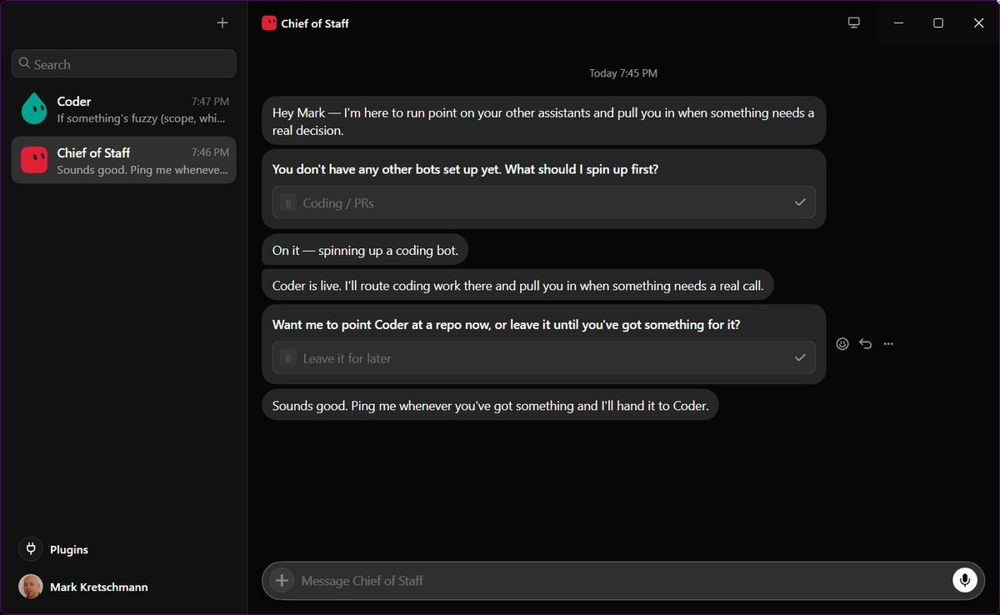
原文配图 · 每周复盘 · Codez (@0xCodez) · 2026/08/18
你不再是那个动手点击的人。
此前的 AI 产品，都是把模型放进一个窗口、把工作留在你手上。Grok Bot 把工作搬到了别处——电脑、登录、记忆、时间都在 bot 手里，决策还在你手里。
这是技术上看起来更小的改变，习惯上更大的改变。
核心能力不再是「我该怎么措辞」，而是「我到底在 delegate 什么，它的权限在哪里止步」。这是一道管理题，不是 prompt 题。
— Codez · Grok Bot Agents · 2026/08/18
SOURCES & CREDITS
引用与原文出处
-
ORIGINAL ARTICLE
Grok Bot Agents: how to automate your life in 10 Steps (Full-tutorial)
作者：Codez (@0xCodez) · 发布于 2026/08/18 · 491.7 万浏览 · 2,528 赞 · 8,550 收藏
原文链接：https://x.com/0xCodez/status/2089676836619878567 - AUTHOR · X https://x.com/0xCodez
- AUTHOR · SUBSTACK https://movez.substack.com — Codez 在 Substack 持续输出 "AI insights from 2030"，主线是 AI Agent / AI Researcher 视角。
- INTERPRETATION 本文为解读版本，按中文阅读习惯重排。原文 10 个 step 完整保留，4 段最值得复制的"示例文本"（charter / trigger / approval / review）做成中英对照代码块，支持一键 Copy。中文版为意译，便于理解。如需引用请以原文为准。
动手建议：先按 Step 01 装好 Grok Bot，按 Step 02 给 Chief 写一段 charter，然后挑一条你每周都做的小 routine（Step 05），用 Step 06 的 trigger 触发一次——跑完两周，再决定要不要按 Step 07/08 扩成 specialist 小组。bot 的真正价值，是把你"懒得描述但会做"的那批事，从桌上搬走。